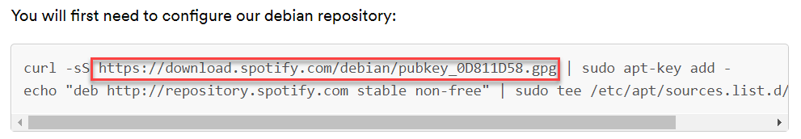
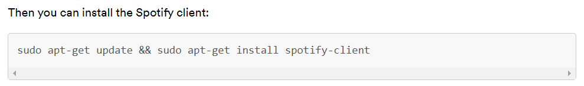

Spotify staat niet in de repository van Ubuntu, maar Spotify houdt er zelf een bij. Je voegt die toe aan je machine, en daarna installeer je Spotify zoals elk ander pakket en blijft het bijgewerkt. Een repository toevoegen is twee bestanden neerzetten: één met het adres en één met de sleutel waarmee de leverancier zijn pakketten ondertekent.
Surf naar de downloadpagina van Spotify voor Linux. Onderaan staan de commando's die zij voorschrijven, en daar haal je twee dingen uit: het adres van de sleutel en de APT-regel.

Er staat | sudo apt-key add - achter. Dat commando zette elke sleutel op één hoop, en
daardoor mocht elke repository de pakketten van elke andere ondertekenen. Ubuntu heeft het daarom
afgevoerd. Je zet de sleutel hieronder in een eigen bestand en je bindt haar aan deze ene
repository. De rest van wat op die bladzijde staat, klopt wel.
Zorg dat de twee programma's die je nodig hebt aanwezig zijn.
curl haalt een bestand op van het internet zonder browser, en gpg is
het programma dat met sleutels en handtekeningen werkt.
Maak de map waarin Ubuntu de sleutels van repositories verwacht.
De optie -p zorgt dat het commando niets zegt wanneer de map al bestaat.
Haal de sleutel op. Neem het adres over van de bladzijde van Spotify, en -o zegt
onder welke naam het bestand bij jou terechtkomt.
Zet ze om naar de vorm waarin apt ze leest, en schrijf ze weg in de map van
daarnet.
Een sleutel bestaat in twee vormen: een die uit leesbare tekens bestaat en er onderweg door
elk systeem heen komt, en een kale binaire. --dearmor maakt van de eerste de
tweede, en dat is degene die apt wil.
Er staat spotify en niet spotifiy. Bij een tikfout krijg je geen
sleutel maar een foutbladzijde, en dan schrijft gpg een bestand weg waar
apt straks niets mee kan. De naam van de sleutel verandert bovendien wanneer
Spotify ze vervangt, dus neem hem over van hun bladzijde en typ hem niet uit je hoofd.
Kijk na of het bestand er staat.
total 12K
drwxr-xr-x 2 root root 4,0K Apr 12 11:33 .
drwxr-xr-x 8 root root 4,0K Apr 12 11:33 ..
-rw-r--r-- 1 root root 1,7K Apr 12 11:33 spotify.gpg
De owner is root en niet jij, want je hebt het commando met sudo
uitgevoerd. De negen letters vooraan zeggen dat iedereen de sleutel mag lezen en alleen root
haar mag wijzigen, en dat is precies wat je hier wil.
De adressen die je machine kent, staan als tekstbestanden onder /etc/apt/sources.list.d/.
Eén bestand per repository, en één regel erin.
Maak zo'n bestand voor Spotify. Het bestaat nog niet, dus nano opent het leeg. Er staat
sudo voor, want in /etc mag een gewone gebruiker niet schrijven.
Typ deze ene regel. Ze is lang, en ze moet op één regel blijven staan.
deb [signed-by=/etc/apt/keyrings/spotify.gpg] http://repository.spotify.com stable non-free
Sla op met CTRL + O en sluit af met CTRL + X.
Kijk na wat je gemaakt hebt.
deb [signed-by=/etc/apt/keyrings/spotify.gpg] http://repository.spotify.com stable non-free
Dit is een repository op je machine: één regel tekst. Ze bestaat uit vier stukken.
| Wat er staat | Wat het is |
|---|---|
deb |
Het gaat om kant-en-klare pakketten. deb-src zou broncode zijn |
[signed-by=...] |
De sleutel waarmee deze ene repository mag ondertekenen, en geen andere |
http://repository.spotify.com |
De server, en daarachter stable, de tak die je volgt |
non-free |
De afdeling waarin het pakket zit |
Haal de lijst met pakketten opnieuw op. De repository van Spotify staat er nu bij, en er komt geen melding over een handtekening.
Hit:1 http://be.archive.ubuntu.com/ubuntu focal InRelease
Hit:2 http://security.ubuntu.com/ubuntu focal-security InRelease
Get:3 http://repository.spotify.com stable InRelease [3.499 B]
Reading package lists... Done
signed inDan klopt er iets niet aan de sleutel of aan het pad ernaar. Kijk de spelling van het adres in stap 4 na en of het pad in de APT-regel letterlijk overeenkomt met het bestand dat je in stap 6 gezien hebt.
Installeer Spotify. Vanaf nu is het een pakket als alle andere, en
sudo apt upgrade houdt het bij.

Zoek Spotify op tussen je toepassingen en start het.